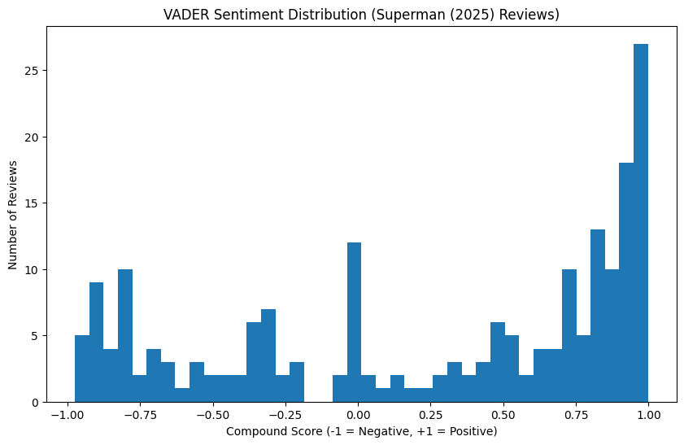
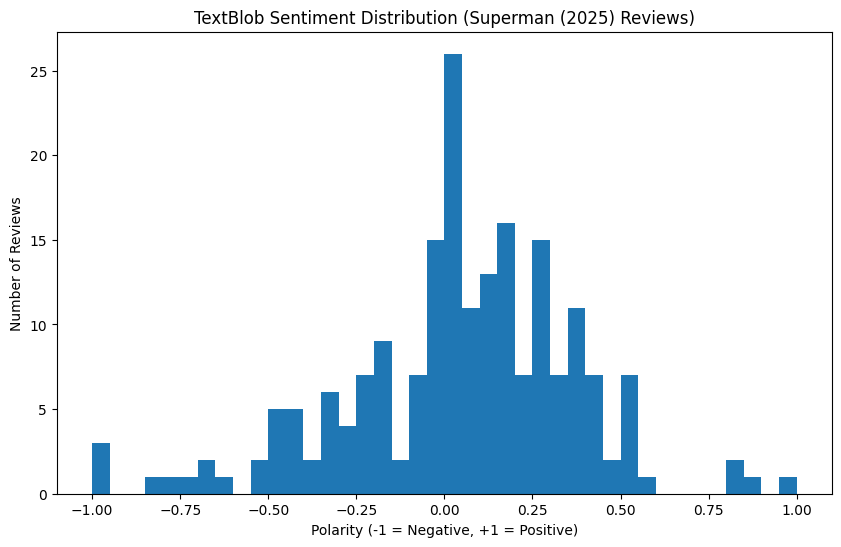
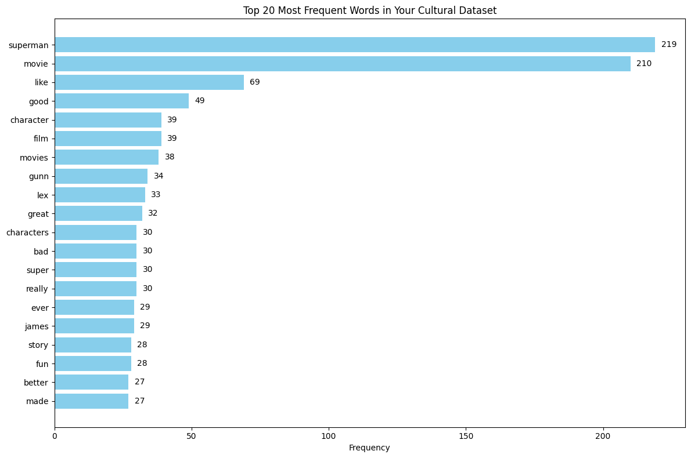
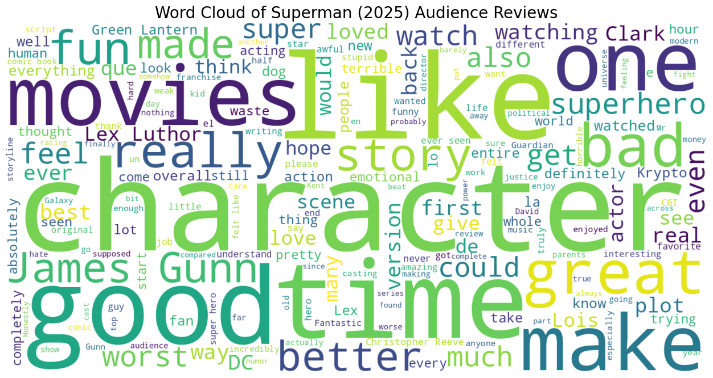

Analysis Overview
I heard a lot about the new 2025 Superman movie. Some people thought it was a return to what the "real" superman should emobdy, others believed it was overhyped and failed to live up to expectations. Going into this analysis, I fully expected a good mix of reviews, both positive and negative. I knew that James Gunn's direction would bring a fresh take, but I was curious how audiences would react to this new portrayal of such an iconic character; if they would embrace the changes or prefer traditional interpretations. I scrapped rotten tomatoes for the 2025 Superman movie, gleaning the 200 most recent reviews off of the site as I believed it would have a comprehensive representation of audience sentiment. Surprisingly, VADER showed a more positive leaning overall, with a significant spike in positive reviews. TextBlob, on the other hand, revealed a more balanced distribution, indicating that while many viewers enjoyed the film, there was also a substantial portion of neutral and slightly negative feedback. This contrast suggests that while the movie resonated well with a large segment of the audience, it also sparked diverse opinions regarding its execution and faithfulness to the Superman legacy.
Sentiment Analysis
Like I mentioned earlier, VADER captured emotional intensity in the language of the reviews. The large spike near a score of +1.0 means that many audience members used more positive vocabulary in their review of the film. This suggests that those who enjoyed the movie did so enthusiastically, often praising the fresh direction, character development, and visual effects.WHile there were negative and mixed reactions, they appeared smaller and more spread across the left side of the chart. This showcases how there were indeed some negative and neutral reviews but reveals that they were less dominant in the overall discourse.
TextBlob, which measures overall polarity, produces a gentler curve: most reviews fall between slightly positive and neutral. The distribution of the chart suggests that a good portion of commentary was descriptive and/or observational. Comparing TextBlob and VADER highlights allows one to witness the different aspects of audience response: TextBlob shows general tone, while VADER captures more emotional sentiments.
Term Frequency
The most frequent words reveal what audiences focused on: story, action, and Superman himself. Words like “superman,” “movie,”, "like", and "good" dominate. Smaller but significant words like “character,” "film",” and "gunn" show that people care about the creative team and storytelling. This term frequency analysis indicates that viewers are noticing the characters and the action but are also taking note of this new era of dc movies under James Gunn.
Topic Modeling
My LDA topic modeling revealed three main topics in the reviews:
Word Cloud
The word cloud visualization shows how the audience really focused on the character of Superman and the movie itself. Words like "superman", "movie", "like", and "good" stand out prominently, indicating that viewers were particularly engaged with the portrayal of the iconic hero and their overall enjoyment of the film.
Key Takeaways
Initially, I expected a mixed bag of reviews for the 2025 Superman movie, given that the beloved character was brought under a fresh direction with James Gunn. Naturally I expected people to have a strong push back against the changes made to such an iconic character. However, the sentiment analysis revealed a more positive leaning sentiment overall, especially with VADER showing a significant spike in positive reviews.
Data and Analysis Files
My full analysis and data files are available below:
Click the links to open or download the files. You can run the notebook in Google Colab to reproduce the charts and analysis.